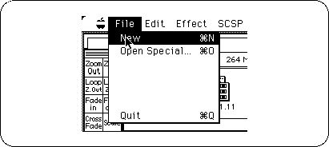
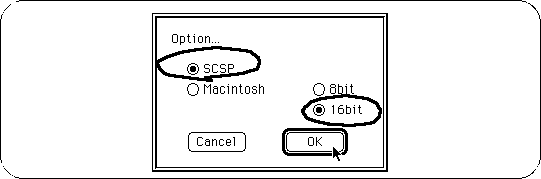
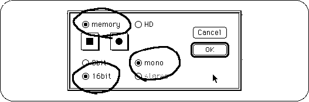
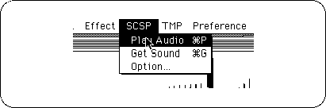
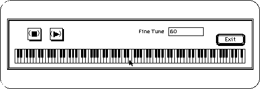
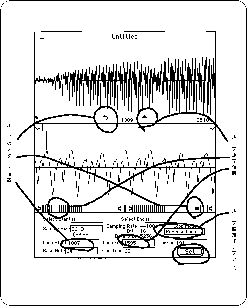
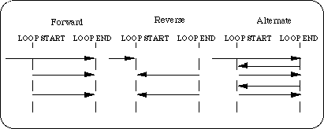
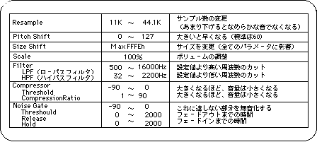

Return to previous page | Return to menu | Go to next page
The only difference between the Saturn target and the MIDI sound source when the power is turned on is that the target does not have timbre data.
Here, the sound handled by the target is acquired as a waveform using the Wave editor.
Since the sound provided by SEGA Sound Library is quite large in size, work such as reducing the size may also occur in order to actually handle it in the game.
However, it's a good idea to use this library until you get some sound.
Let's actually capture the sound.
This process is called sampling. By using the Wave Editor of the Sega Sound Tool, the read sound can be output directly from the target.
The sound is captured in the following order.
Launch the Wave editor.
Select Create new file.

Set the sampling condition from the target.
Select "SCSP" because it will sound from the target. In addition, select “16 bits” for capturing sound. After selecting, click “OK”.

Select memory if the sound capture time is less than 10 seconds, and select HD if it takes more than 10 seconds.
As shown in the figure, “16 bits” can be handled and only monaural can be handled for importing. After selecting, click “OK”.

HD, a file is created after sampling, and it is necessary to reopen the file yourself.
Therefore, if you use the Wave editor, try to keep it as small as possible.
HD is selected, the following screen appears. Normally, select “ON” and click “OK”.
Select “Play Audio”.

Then the keyboard screen will appear. Use this screen to play the sampled waveform.
However, since waveform editing is the main task here, pressing the key softly or pressing it hard will not change the volume.
Set the volume with Tone Editor .

When you press the keyboard part with the mouse, sound will come out from the target.
If you press play button (s), the sound of the basic key will be heard. To stop, press the stop button (■).
Cut, copy and paste can be selected with the mouse and executed from the edit menu in the same way as general word processing software.
The only difference is that in the case of paste or cut, there is a choice of overwriting the selected part or filling the part to be cut, so the process is almost the same.
By applying a loop, the sound within the specified range of the loop can be repeated, reducing the size required for the waveform.
The following figure shows an example of loop settings. After setting, click “Set”.

If you hear a slight noise at the end, shift the loop position.
While confirming the sound with the space key, move it little by little with the arrow of the scroll bar.
There are three types of loops:

I think that there are some parts that you can't understand unless you try various things, so only a guide is included. All you have to do is change the value.

Try to change these adjustments little by little, without changing the values too much.
Also, save data frequently.
The final file will be a Macintosh AIFF (Audio Interface File Format) file.
The Wave editor described so far has the advantage of being able to see the sound directly from the target, but those who were already familiar with other Macintosh waveform editing software used it only for the final check. It seems that the efficiency increases.
Macintosh sound-related software has a long history, so why not try various software?